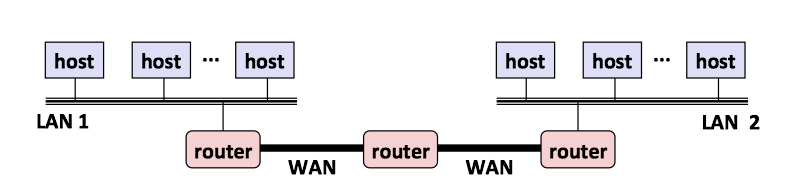

Operating System Concepts 5 - CPU Scheduling
- 1 Basic Concepts
- 2 Scheduling Criteria
- 3 Scheduling Algorithms
- 4 Thread Scheduling
- 5 Multi-Processor Scheduling
- 6 Real-Time CPU Scheduling
- 7 Linux Scheduling
On modern operating systems it is kernel-level threads —not processes—that are in fact being scheduled by the operating system.
- User-level threads are managed by a thread library, and the kernel is unaware of them.
- To run on a CPU, user-level threads must ultimately be mapped to an associated kernel-level thread, although this mapping may be indirect and may use a lightweight process (LWP).
1 Basic Concepts
1.1 CPU-I/O Burst Cycle
Process execution consists of a cycle of CPU execution and I/O wait. 进程执行由CPU执行周期和I/O等待周期组成。
- Processes alternate between these two states. 进程在这两个状态之间切换。
- Process execution begins with a CPU burst, which is followed by an I/O burst and so on. 进程执行从CPU区间开始，在这之后是I/O区间。
进程在CPU区间和I/O区间之间切换：

The durations of CPU bursts tend to have a frequency curve similar to the figure below.
- The curve is generally characterized as exponential or hyperexpoential(超指数).
- A large number of short CPU bursts and a small number of long CPU burst.
- An I/O-bounded program typically has many short CPU bursts. I/O密集程序通常具有很多短CPU区间。
- A CPU-bound program might have a few long CPU bursts.CPU密集程序可能有少量的长CPU区间。
- The distribution can be important when implementing a CPU-scheduling algorithm. 分布有助于选择合适的CPU调度算法。

1.2 CPU Scheduler
Whenever the CPU becomes idle, the operating system must select one of the processes in the ready queue(就绪队列) to be executed. 每当CPU空闲时，操作系统就必须从就绪队列中选择一个进程来执行。
- The selection process is carried out by the CPU scheduler(CPU调度程序). 进程选择由CPU调度程序执行。
- CPU scheduler selects a process from the processes in memory that are ready to execute and allocates the CPU to that process. 调度程序从内存中选择一个能够执行的进程，并为之分配CPU。
- A ready queue can be implemented as a FIFO queue, a priority queue, a tree, or simply an unordered linked list. 就绪队列可以是FIFO队列，优先队列、树或无序链表。
1.3 Preemptive and Nonpreemptive Scheduling
CPU-scheduling decisions may take place under the following four circumstances:
- When a process switches from the running state to the waiting state (for example, as the result of an I/O request or an invocation of
wait()for the termination of a child process) 当一个进程从运行状态切换到等待状态（如：I/O请求，或者调用wait等待一个子进程的终止） - When a process switches from the running state to the ready state (for example, when an interrupt occurs) 当一个进程从运行状态切换到就绪状态（如：出现中断）
- When a process switches from the waiting state to the ready state (for example, at completion of I/O) 当一个进程从等待状态切换到就绪状态（如：I/O完成）
- When a process terminates 当一个进程终止时
When scheduling takes place only under circumstances 1 and 4, the scheduling scheme is nonpreemptive(非抢占的) or cooperative(协作的). Otherwise, it is preemptive(抢占的).
- Under nonpreemptive scheduling, once the CPU has been allocated to a process, the process keeps the CPU until it releases it either by terminating or by switching to the waiting state.
- Virtually all modern Operating systems use preemptive scheduling algorithms.
1.4 Dispatcher
The dispatcher(分派程序) is the module that gives control of the CPU's core to the process selected by the CPU scheduler. This function involves the following:
- Switching context from one process to another
- Switching to user mode
- Jumping to the proper location in the user program to resume that program
Dispatch latency (分派延迟) is the time it takes for the dispatcher to stop one process and start another running.

2 Scheduling Criteria
Scheduling criteria（调度准则) include the following:
- CPU utilization (CPU利用率)
- Throughput (吞吐量)： the number of processes that are completed per time unit.
- Turnaround time (周转时间): the interval from the time of submission of a process to the time of completion.
- Waiting time (等待时间): the sum of time spent waiting in the ready queue.
- Response time (响应时间): the time from the submission of a request until the first response is produced.
3 Scheduling Algorithms
3.1 First-Come,First-Served scheduling, FCFS
By far the simplest CPU-scheduling algorithm is the first-come first serve scheduling (先到先服务调度, FCFS) algorithm.
- The implementation of FCFS policy is easily managed with a FIFO queue.
- The average waiting time under the FCFS policy is often quite long.
- Convoy effect(护航效果) occurs when all the other processes wait for the one big process to get off the CPU. 所有其他进程都等待一个大进程释放CPU，这称之为护航效果。
- The FCFS scheduling algorithm is nonpreemptive. FCFS调度算法是非抢占的。
3.2 Shortest-job-first scheduling, SJF
The shortest-job-first scheduling (最短作业优先调度, SJF) algorithm associates with each process the length of the process's next CPU burst.
- When the CPU is available, it is assigned to the process that has the smallest next CPU burst.
- It gives the minimum average waiting time for a given set of processes.
- The SJF algorithm can be either preemptive or nonpreemptive.
- Preempt the currently executing process: when a new process arrives at the ready queue while a previous process is still executing. The next CPU burst of the newly arrived process may be shorter than what is left of the currently executing process.
The next CPU burst is generally predicted as an exponential average of the measured lengths of previous CPU bursts. Let \(t_n\) be the length of the \(n\)th CPU burst, and let \(\tau_{n+1}\) be predicted value for the next CPU burst:
\[\tau_{n+1}= \alpha \tau_n + (1-\alpha) \tau_n\]
where \(0\le\alpha \le 1\), commonly \(\alpha = 1/2\).
3.3 Round-Robin scheduling, RR
The round-robin scheduling(轮转调度) algorithm is similar to FCFS scheduling, but switch occurs after 1 time quantum (时间片).
- Time quantum is a small unit of time, generally from 10 to 100 milliseconds in length.
- The ready queue is treated as a circular queue.
- If the process have a CPU burst of less than 1 time quantum, the process itself will release the CPU voluntarily.
- otherwise, a context switch will be executed, and the process will be put at the tail of the ready queue.
The performance of the RR algorithm depends heavily on the size of the time quantum.
- If extremely large, the RR policy is the same as the FCFS policy.
- If extremely small, it'll result in a large number of context switches.
3.4 Priority scheduling algorithm
The priority-scheduling(优先级调度) algorithm associate each process a priority, and the CPU allocated to the process with the highest priority.
- FCFS: equal-priority
- SJF: the priority is the inverse of the next CPU burst.
ISSUE: Indefinite blocking(无限阻塞), or starvation(饥饿) occurs when some low-priority processes waiting indefinitely.
SOLUTION: Aging(老化) involves gradually increasing the priority of processes that wait in the system for a long time.
3.5 Multilevel Queue Scheduling
For multilevel queue scheduling(多级队列调度), there are separate queues for each distinct priority, and priority scheduling simply schedules the process in the highest-priority queue.
A multilevel queue scheduling algorithm can be used to partition processes into several separate queuse based on the process type.

In addition, there must be scheduling among the queues :
- Fixed-priority preemptive scheduling(固定优先级抢占调度): Each queue has absolute priority over lower-priority queues
- eg. no process in the batch queue, could run unless the queues for real-time processes, system processes, and interactive processes were all empty.
- Time-slice among queues(队列之间划分时间片): each queue gets a certain portion of the CPU time.
- eg. the foreground queue can be given 80 percent of the CPU time for RR scheduling among its processes, while the background queue receives 20 percent of the CPU to give to its processes on an FCFS basis.
3.6 Multilevel Feedback-Queue Scheduling
The multilevel feedback queue scheduling(多级反馈队列调度) algorithm allows a process to move between queues.
- If a process uses too much CPU time, it will be moved to a lower-priority queue.
- It leaves I/O-bound and interactive processes—which are typically characterized by short CPU bursts —in the higher-priority queues.
- A process that waits too long in a lower-priority queue may be moved to a higher-priority queue.
- This form of aging prevent starvation.
In general, a multilevel feedback queue scheduler is defined by the following parameters:
- The number of queues
- The scheduling algorithm for each queue
- The method used to determine when to upgrade a process to a higher priority queue
- The method used to determine when to demote a process to a lower priority queue
- The method used to determine which queue a process will enter when that process needs service
4 Thread Scheduling
4.1 Contention Scope
Process contention scope (PCS，进程竞争范围), occurs when competition for the CPU takes place among threads belonging to the same process.
- the thread library schedules user-level threads to run on an available LWP, on systems implementing the many-to-one and many-to-many models.
To decide which kernel-level thread to schedule onto a CPU, the kernel uses system-contention scope (SCS, 系统竞争范围).
- Systems using the one-to-one model, such as Windows and Linux schedule threads using only SCS.
4.2 Pthread Scheduling
Pthreads identifies the following contention scope values:
PTHREAD_SCOPE_PROCESSschedules threads using PCS scheduling.PTHREAD_SCOPE_SYSTEMschedules threads using SCS scheduling.
The Pthread IPC (Interprocess Communication) provides two functions for setting—and getting—the contention scope policy:
pthread_attr_setscope(pthread_attr_t *attr, int scope)pthread_attr_getscope(pthread_attr_t *attr, int *scope)
#include <pthread.h>
#include <stdio.h>
#define NUM_THREADS 5
/* the thread runs in this function */
void *runner(void *param);
int main(int argc, char *argv[])
{
int i, scope;
pthread_t tid[NUM_THREADS]; /* the thread identifier */
pthread_attr_t attr; /* set of attributes for the thread */
/* get the default attributes */
pthread_attr_init(&attr);
/* first inquire on the current scope */
if (pthread_attr_getscope(&attr,&scope) != 0)
fprintf(stderr, "Unable to get scheduling scope.\n");
else {
if (scope == PTHREAD_SCOPE_PROCESS)
printf("PTHREAD_SCOPE_PROCESS\n");
else if (scope == PTHREAD_SCOPE_SYSTEM)
printf("PTHREAD_SCOPE_SYSTEM\n");
else
fprintf(stderr,"Illegal scope value.\n");
}
/* set the scheduling algorithm to PCS or SCS */
if (pthread_attr_setscope(&attr, PTHREAD_SCOPE_SYSTEM) != 0)
printf("unable to set scheduling policy.\n");
/* create the threads */
for (i = 0; i < NUM_THREADS; i++)
pthread_create(&tid[i],&attr,runner,NULL);
/**
* Now join on each thread
*/
for (i = 0; i < NUM_THREADS; i++)
pthread_join(tid[i], NULL);
}
/**
* The thread will begin control in this function.
*/
void *runner(void *param)
{
/* do some work ... */
pthread_exit(0);
}
5 Multi-Processor Scheduling
5.1 Approaches to Multiple-Processor Scheduling
Asymmetric multiprocessing (AMP，非对称多处理)
- all scheduling decisions, I/O processing, and other system activities handled by a single processor -- the master server; the other processors execute only user code. 让一个处理器（主服务器）处理所有的调度决定、I/O处理以及其他系统活动，其他的处理器只执行用户代码。
- it is simple because only one core accesses the system data structures, reducing the need for data sharing. 简单，因为只有一个处理器访问系统数据结构，减轻了数据共享的需要。
- the master server becomes a potential bottleneck where overall system performance may be reduced.
Symmetric multiprocessing (SMP， 对称多处理)
- each processor is self-scheduling
- it provides two possible strategies for organizing the threads eligible to be scheduled:
- All threads may be in a _common ready queue_.
- use some form of locking to protect the common ready queue from race condition
- all accesses to the queue would require lock ownership, it would be a performance bottleneck.
- Each processor may have its own private queue of threads.
- most common approach on systems supporting SMP
- more efficient use of cache memory.
- All threads may be in a _common ready queue_.

5.2 Multicore Processors
Issue : memory stalls occurs when a processor accesses memory, it spends a significant amount of time waiting for the data to become available.
- occurs primarily because modern processors operate at much faster speeds than memory
- occur because of a cache miss

Solution : many recent hardware designs have implemented multithreaded processing cores in which two (or more) hardware threads(硬件线程) are assigned to each core.
- If one hardware thread stalls while waiting for memory, the core can switch to another thread.
- From an operating system perspective, each hardware thread maintains its architectural state, such as instruction pointer and register set, and thus appears as a logical CPU that is available to run a software thread. This technique is known as chip multithreading (CMT, 芯片多线程). Intel use the term hyper-threading(超线程).
- NOTE: the resources of the physical core (such as caches and pipelines) are shared among its hardware threads, and a processing core can only execute one hardware thread at a time.

Two levels of scheduling needed:
- It chooses which software thread to run on each hardware thread.
- It may choose any scheduling algorithm.
- It chooses which hardware thread to run on CPU.
- Use a simple round-robin algorithm
- assigned to each hardware thread a dynamic urgency value ranging from 0 to 7, with 0 representing the lowest urgency and 7 the highest.

5.3 Load Balancing
Load balancing(负载均衡) attempts to keep the workload evenly distributed across all processors in an SMP system.
Two general approaches to load balancing:
- Push migration: a specific task periodically checks the load on each processor and -- if it finds an imbalance -- evenly distributes the load by moving (or pushing) threads from overloaded to idle or less-busy processors.
- Pull migration: an idle processor pulls a waiting task from a busy processor.
- They are not mutually exclusive and are, in fact, often implemented in parallel on load-balancing systems.
5.4 Processor Affinity
Because of the high cost of invalidating and repopulating caches, most operating systems with SMP support try to avoid migrating a thread from one processor to another and instead attempt to keep a thread running on the same processor and take advantage of a warm cache. This is known as processor affinity(处理器亲和性)。
Common ready queue and per-processor ready queue(section 5.1):
- If we adopt the approach of a common ready queue, a thread may be selected for execution by any processor. Thus, if a thread is scheduled on a new processor, that processor’s cache must be repopulated.
- With private, per-processor ready queues, a thread is always scheduled on the same processor and can therefore benefit from the contents of a warm cache.
The main-memory architecture of a system can affect processor affinity issues as well. Non-uniform memory access(NUMA, 非一致性内存访问) where there are two physical processor chips each with their own CPU and local memory. A CPU has faster access to its local memory than to memory local to another CPU.

Interestingly, load balancing often counteracts the benefits of processor affinity.
6 Real-Time CPU Scheduling
[to be continued]
7 Linux Scheduling
The Completely Fair Scheduler（CFS，完全公平调度算法) is the default Linux scheduling algorithm.
- Each task has a virtual runtime value, which is its actual runtime normalized to the number of ready tasks.
- Task priority is incorporated as a decay factor into this
formula.- Lower-priority tasks have higher rates of decay than higher-priority tasks.
- The CPU is allocated to the task with the smallest virtual
runtime value.
Standard Linux kernels implement two scheduling classes(调度类):
- a default scheduling class using the CFS scheduling algorithm
- a real-time scheduling class.
Each runnable task is placed in a red-black tree - a balanced binary search tree whose key is based on the value of virtual runtime vruntime.
- discover the leftmost node will require \(O(\log N)\) operations.
- Linux scheduler caches the leftmost node in the variable
rb_leftmost, and requires only retrieving the cached value.

Operating System Concepts 6 - Synchronization Tools
- 1 Background
- 2 The Critical-Section problem
- 3 Peterson's Solution
- 4 Hardware support for Synchronization
- 5 Mutex locks
- 6 Semaphores
- 7 Monitors
- 8 Liveness
- 9 Evaluation
1 Background
A race condition(竞争条件) occurs when several processes access and manipulate the same data concurrently and the outcome of the execution depends on the particular order in which the access takes place.
多个进程并发访问和操作同一数据，且执行结果与访问发生的特定顺序有关，称之为竞争条件。
2 The Critical-Section problem
A critical section（临界区） is a section of code, in which the process may be accessing and updating data that is shared with at least one other process.
- When one process is executing in its critical section, no other process is allowed to execute in its critical section.
The critical-section problem（临界区问题） is to design a protocol that the processes can use to synchronize their activity so as to cooperatively share data.
- Each process must request permission to enter its critical section.
- The section of code implementing this request is the entry section（进入区）
- The critical section may be followed by an exit section (退出区)。
- The remaining code is the **remainder section **（剩余区)。

A solution to the critical-section problem must satisfy the following three requirements:
- Mutual exclusion (互斥): If process \(P_i\) is executing in its critical section, then no other processes can be executing in their critical sections. 如果进程\(P_i\)在其临界区内执行，那么其他进程都不能在其临界区内执行；
Progress (前进): If no process is executing in its critical section and some processes wish to enter their critical sections, then only those processes that are not executing in their remainder sections can participate in deciding which will enter its critical section next, and this selection cannot be postponed indefinitely. 如果没有进程在其临界区内执行且有进程需进入临界区，那么只有那么不在剩余区内执行的进程可参加选择，以确定谁能下一个进入临界区，且这种选择不能无限推迟；
Bounded waiting (有限等待): There exists a bound, or limit, on the number of times that other processes are allowed to enter their critical sections after a process has made a request to enter its critical section and before that request is granted. 从一个进程做出进入临界区的请求，直到该请求允许为止，其他进程允许进入其临界区内的次数有上限。
Two general approaches are used to handle critical sections in operating systems: preemptive kernels（抢占内核） and nonpreemptive kernels（非抢占内核）.
- A preemptive kernel allows a process to be preempted while it is running in kernel mode. 抢占内核允许处于内核模式的进程被抢占。
- A nonpreemptive kernel does not allow a process running in kernel mode to be preempted.A kernel-model process will run until it exists kernel mode, blocks, or voluntarily yields control of the CPU.非抢占内核不允许内核模式的进程被抢占。
- A nonpreemptive kernel is essentially free from race conditions on kernel data structures, as only on process is active in the kernel at at time. 非抢占内核的内核从根本上不会导致竞争条件，因为在内核中一次只有一个进程是活跃的。
- Preemptive kernels must be carefully designed to ensure that shared kernel data are free from race conditions. 对于抢占内核需要认真设计以确保共享内和数据免于竞争条件。
- A preemptive kernel may be more responsive, since there is less risk that a kernel-model process will run for an arbitrarily long period before relinquishing the processor to waiting process. 抢占内核的响应更快，因为处于内核模式的进程在释放CPU之前不会运行过久。
- A preemptive kernel is more suitable for real-time programming, as it will allow a real-time process to preemptive a process currently running in the kernel. 抢占内核更适合实时编程，因为它能允许实时进程抢占处于内核模式运行的其他进程。
3 Peterson's Solution
Peterson’s solution(Peterson 算法) is restricted to two processes that alternate execution between their critical sections and remainder sections. The processes are numbered \(P_0\) and \(P_1\). For convenience, when presenting \(P_i\), we use \(P_j\) to denote the other process; that is \(j\) equals \(1-i\).
Peterson's solution requires the two processes to share two data items:
int turn;
boolean flag[2];
The structure of process \(P_i\) in Peterson's solution.
while (true) {
flag[i] = true;
turn = j;
while (flag[j] && turn == j)
;
/* critical section */
flag[i] = false;
/*remainder section */
}
- The variable
turnindicates whose turn it is to enter its critical section. - The
flagarray is used to indicate if a process is ready to enter its critical section.
Note: Peterson’s solution is not guaranteed to work on modern computer architectures for the primary reason that, to improve system performance, processors and/or compilers may reorder read and write operations that have no dependencies.
If the assignments of the first two statements that appear in the entry section of Peterson's solution are reordered. It is possible that both threads may be active in their critical sections at the same time.

4 Hardware support for Synchronization
Hardware support for the critical-section problem includes,
- memory barriers
- hardware instructions
- atomic variables
4.1 Memory barriers
How a computer architecture determines what memory guarantees it will provide to an application program is known as its memory model(内存模型). In general, a memory model falls into one of two categories:
- Strongly ordered, where a memory modification on one processor is immediately visible to all other processors.
- Weakly ordered, where modifications to memory on one processor may not be immediately visible to other processors.
Computer architectures provide instructions that can force any changes in memory to be propagated to all other processors, thereby ensuring that memory modifications are visible to threads running on other processors. Such instruction are known as memory barriers(内存屏障).
- When a memory barrier instruction is performed, the system ensures that all loads and stores are completed before any subsequent load or store operations are performed.
4.2 Hardware instructions
Many modern computer systems provide special hardware instructions that allow either to test and modify the content of a word or to swap the contents of two words atomically - that is, one uninterruptible unit.
The definition of the atomic test_and_set() instruction:
boolean test and set(boolean *target) {
boolean rv = *target;
*target = true;
return rv;
}
Mutual-exclusion implementation with test_and_set():
do {
while (test and set(&lock))
; /* do nothing */
/* critical section */
lock = false;
/* remainder section */ }
while (true);
The definition of the atomic compare_and_swap()（CAS）instruction:
int compare and swap(int *value, int expected, int new value) {
int temp = *value;
if (*value == expected)
*value = new value;
return temp;
}
Mutual exclusion with the compare_and_swap() instruction:
while (true) {
while (compare and swap(&lock, 0, 1) != 0)
; /* do nothing */
/* critical section */
lock = 0;
/* remainder section */
}
4.3 Atomic variables
Atomic variables (原子变量) provides atomic operations on basic data types such as integers and booleans. Their use is often limited to single updates of shared data such as counters and sequence generators.
5 Mutex locks
ISSUE: The hardware-based solutions are complicated as well as generally inaccessible to application programmers.
SOLUTION: Operating-system designers build higher-level software tools. The simplest of these tools is the mutex lock(互斥锁)。
- A process must acquire the lock before entering a critical section;
- A process releases the lock when it exists the critical section.
- A mutex lock has a boolean variable available, whose value indicates if the lock is available or not.
- Calls to either
acquire()orrelease()must be performed atomically. Thus mutex locks can be implemented using the CAS operation.
Solution to the critical-section problem using mutex locks:

The definition of acquire() is as follows:
acquire() {
while (!available) ;
/* busy wait */
available = false;
}
The definition of release() is as follows:
release(){
available = true;
}
The main disadvantage of the implementation is that it requires busy waiting.
- while a process is in its critical section, any other process that tries enter its critical section must loop continuously in the call to
acquire(). - it wastes CPU cycles.
Because the process "spins" while waiting for the lock to become available, this type of mutex lock is also called a spinlock（自旋锁）。
- advantage: no context switch is required
Spinlocks are not appropriate for single-processor systems yet are often used in multiprocessor systems.
在UNIX中，自旋锁相关的API：
// 初始化自旋锁： 用来申请使用自旋锁所需要的资源并且将它初始化为非锁定状态
int pthread_spin_init(pthread_spinlock_t *, int);
// 获得一个自旋锁：如果该自旋锁当前没有被其它线程所持有，则调用该函数的线程获得该自旋锁.
// 否则该函数在获得自旋锁之前不会返回。
int pthread_spin_lock(pthread_spinlock_t *);
//释放指定的自旋锁
int pthread_spin_unlock(pthread_spinlock_t *);
// 销毁一个自旋锁
int pthread_spin_destroy(pthread_spinlock_t *);
6 Semaphores
A semaphore(信号量) S is an integer variable that, apart from initialization, is accessed only through two standard atomic operations: wait() and signal(). 信号量S是个整数变量，除了初始化外，它只能通过两个标准原子操作：wait()和signal()来访问。
The definition of wait() is as follows:
wait(S){
while (S <= 0)
;// busy wait
S--;
{
The definition of signal() is as follows:
signal(S){
S++;
}
All modifications to the integer value of the semaphore in the wait() and signal() operations must be executed atomically. 在wait()和signal()操作中，对信号量整型值的修改必须不可分地执行。
Operating systems often distinguish between counting and binary semaphores.通常操作系统区分计数信号量和二进制信号量。
- The value of a counting semaphore(计数信号量) can range over an unrestricted domain.计数信号量的值域不受限制。
- The value of a binary semaphore(二进制信号量) can range only between 0 and 1. 二进制信号量的值只能为0或1。
Counting semaphores can be used to control access to a given resource consisting of a finite number of instances.
- The semaphore is initialized to the number of resources available.
- Each process that wishes to use a resource performs a
wait()operation on the semaphore (thereby decrementing the count). - When a process releases a resource, it performs a
signal()operation (incrementing the count). - When the count for the semaphore goes to 0, all resources are being used. After that, processes that wish to use a resource will block until the count becomes greater than 0.
7 Monitors
Issues: various types of errors can be generated easily when programmers use semaphores or mutex locks incorrectly to solve the critical-section problem.
- interchanges the order of
wait()andsignal() - replaces
signal()withwait() - omits
wait()orsignal()
Solution: An abstract data type, monitor(管程), includes a set of programmer-defined operation related to mutual exclusion within the monitor. A monitor uses condition variables that allow processes to wait for certain conditions to become true and to signal one another when conditions have been set to true.
Pseudocode syntax of a monitor:
monitor monitor name { /* shared variable declarations */
function P1 ( . . . ) { . . .}
function P2 ( . . . ) { . . .}
.
.
function Pn ( . . . ) { . . .}
initialization code ( . . . ) { . . .}
}

8 Liveness
8.1 Deadlock
deadlocked(死锁): two or more processes are waiting indefinitely for an event.
A set of processes is in a deadlocked state when every process in the set is waiting for an event that can be caused only by another process in the set.
8.2 Priority Inversion
A scheduling challenge arises when a higher-priority process needs to read or modify kernel data that are currently being accessed by a lower-priority process—or a chain of lower-priority processes.
- Since kernel data are typically protected with a lock, the higher-priority process will have to wait for a lower-priority one to finish with the resource.
- The situation becomes more complicated if the lower-priority process is preempted in favor of another process with a higher priority.
As an example, assume we have three processes—\(L\), \(M\), and \(H\)—whose priorities follow the order \(L < M < H\).
- Assume that process \(H\) requires a semaphore \(S\), which is currently being accessed by process \(L\).
- Ordinarily, process \(H\) would wait for \(L\) to finish using resource S.
- However, now suppose that process \(M\) becomes runnable, thereby preempting process \(L\).
- Indirectly, a process with a lower priority—process \(M\)—has affected how long process \(H\) must wait for \(L\) to relinquish resource \(S\).
This liveness problem is known as priority inversion（优先级反转）, and it can occur only in systems with more than two priorities.
Solution： priority-inheritance protocol(优先级继承协议)：
- All processes that are accessing resources needed by a higher-priority process inherit the higher priority until they are finished with the resources.
- When they are finished, priorities revert to original values.
9 Evaluation
Performance differences between CAS-based synchronization and traditional synchronization (such as mutex locks and semaphores) under varying contention loads:
- Uncontended： Although both options are generally fast, CAS protection will be somewhat faster than traditional synchronization.
- Moderate contention： CAS protection will be faster—possibly much faster —than traditional synchronization.
- High contention： Under very highly contended loads, traditional synchronization will ultimately be faster than CAS-based synchronization.
Higher-level tools such as monitors and condition variables may have significant overhead, and may be less likely to scale in highly contended situations.
CSAPP - 网络编程
1 客户端-服务器编程模型
每个网络应用都是基于客户端-服务器模型的。
客户端-服务器模型中的基本操作是事务(transaction)。一个客户端-服务器事务由以下四步组成：
- 当一个客户端需要服务时，它向服务器发送一个请求，发起一个事务。
- 服务器收到请求后，解释它，并以适当的方式操作它的资源。
- 服务器给客户端发送一个响应，并等待下一个请求。
- 客户端收到响应并处理它。

客户端和服务器是进程，而不是常提到的机器或者主机。
- 一台主机可以同时运行许多不同的客户端和服务器
- 一个客户端和服务器的事务可以在同一台或是不同的主机上。
2 网络
对主机而言，网络只是又一种I/O设备，是数据源和数据接收方。物理上而言，网络是一个按照地理远近组成的层次系统。
2.1 网络层次系统
(1) 最底层：以太网段
局域网(LAN, Local Area Network)的范围一般限制在一个建筑或者校园内。最流行的局域网技术是以太网(Ethernet)，由电缆和集线器(hub)组成一个以太网段。

(2) 桥接以太网
桥接以太网(bridged Ethernet)是将以太网段用电缆和网桥(bridge)连接成的较大的局域网。

(3) 互联网络
多个不兼容的局域网可以通过路由器(routers)连接成互联网络(internets)。

2.2 网络协议
互联网络是由各种局域网和广域网组成，它们采用完全不同且不兼容的技术。那么如何能让某台主机跨过所有不兼容的网络发送数据位到另一台目的主机呢？
解决方法：一层运行在每台主机和路由器上的协议软件，它消除了不同网络之间的差异。协议提供了两种基本能力：
- 提供了命名机制
- 定义一致的主机地址(host adress)格式
- 每台主机会被分配至少一个互联网络地址(internet address)，地址唯一地标识了主机
提供了传送机制
- 定义了统一的基本传送单位-包(packet)
- 包由包头(header)和有效载荷(payload)组成
- 包头包括包的大小以及源主机和目的主机的地址
- 有效载荷包括从源主机发出的数据位

PH: Internet packet header, 互联网络包头
FH: LAN frame header, 局域网帧头
3 全球IP因特网
全球IP因特网(Global IP Internet)是最著名和最成功的互联网络(internet)实现。每台因特网主机都运行实现TCP/IP协议的软件，使用套接字接口(sockets interface)函数和Unix I/O函数来通信。

从程序员的角度：
- 主机被映射为一组32位的IP地址(IP addresses)
- 128.2.203.179
- IP地址被映射为一组标识符，叫做域名(domain name)
- 因特网主机上的进程能够通过连接和任何其他因特网主机上的进程通信。
3.1 IP地址
32位IP地址存在一个IP地址结构(in_addr)中
- IP地址在内存中是以网络字节顺序(network byte order, 大端法)存放的
/* Internet address structure */
struct in_addr {
uint32_t s_addr; /* network byte order (big-endian) */
};
3.2 域名
域名(domain names)是一串用句点分隔的单词(字母、数字和破折号)。域名集合形成了一个层次结构，可以表示为一棵树。

域名系统(Domain Naming System, DNS)是映射IP地址和域名的数据库。可以把DNS数据库视为上百万的主机条目结构(host entry structure)的集合，其中每条定义了一组域名和一组IP地址之间的映射。
- DNS映射，可以通过
nsloopup查看 - 在最简单的情况中，一个域名和一个IP地址之间是一一映射
nslookup whaleshark.ics.cs.cmu.edu-Address: 128.2.210.175
- 然而，在某些情况下，多个域名可以映射为同一个IP地址
nslookup cs.mit.edu/ nslookup eecs.mit.edu-Address: 18.62.1.6
- 在最通常的情况下，多个域名可以映射到同一组的多个IP地址
nslookup www.twitter.com-Address: 199.16.156.6,Address:199.16.156.70
3.3 因特网连接
客户端和服务器通过连接(connections)发送字节流来通信，每一个连接都有如下特点：
- 点对点(point-to-point)：连接一对进程
- 全双工(full-duplex)：数据可以同时在两个方向传送
- 可靠性(reliable)：发送和接收的字节流顺序相同
套接字(sockets)是连接的端点，套接字地址用 “地址：端口”来表示。
- 端口(port)是一个16位整数，标识了一个进程。
- 临时端口：当可会淡发起连接请求时，内核自动分配的端口
- 知名端口：和服务器提供的服务有短的端口 (
- Web服务器使用端口80
- ssh服务器使用端口22
- email服务器使用端口25
一个连接是由它两端的套接字地址唯一确定的（套接字对, socket pair）。

使用端口来识别服务

4 套接字接口
什么是套接字？
- 对于内核来说，套接字是通信的端点。 To the kernel, a socket is an endpoint of communication
- 对于应用来说，套接字是让应用从网络读写的文件描述符。 To an application, a socket is a file descriptor that lets the application read/write from/to the network.
客户端和服务器通过对套接字描述符读写进行通信：

(1) 通用套接字地址(generic socket address)：
- 以套接字地址作为
connect(),bind(),accept的实参 - 仅仅因为那时的C不存在
void *指针，所以套接字接口被设计成这样。
struct sockaddr {
uint16_t sa_family; /* Protocol family */
char sa_data[14]; }; /* Address data. */
(2) 因特网的套接字地址
- 必须将
struct sockaddr_in *转换为struct sockaddr *才能以套接字地址作为函数实参
struct sockaddr_in {
uint16_t sin_family;
uint16_t sin_port;
struct in_addr sin_addr;
unsigned char sin_zero[8];
};

- 开启服务器(start server)
getaddrinfo: 把主机名(hostname）、主机地址(host addresses)、端口(ports)和服务名(service names)转换为套接字地址结构。socket: 创建一个套接字描述符(socket descriptor)，也就是之后用来读写的 file descriptorbind: 请求内核把套接字地址和套接字描述符绑定listen: 将套接字描述符从一个主动套接字转换为监听套接字(listening socket)，该套接字可以接受来自客户端的连接请求accept: 等待来自客户端的连接请求
- 开启客户端(start client)
getaddrinfo,socket与开启服务器相同connect: 试图与服务器建立连接
4.1 Echo客户端和服务器示例
在和服务器建立连接之后，客户端进入一个循环，反复从标准输入读取文本行，发送文本行给服务器，从服务器读取回送的行，并输出结果到接准输出。
#include "csapp.h"
int main (int argc, char **argv) {
int clientfd;
char *host, *port, buf[MAXLINE];
rio_t rio;
host = argv[1];
port = argv[2];
//和服务器建立连接
clientfd = Open_clientfd(host, port);
Rio_readinitb(&rio, clientfd);
while (Fgets(buf, MAXLINE, stdin) != NULL) {
// 写入，也就是向服务器发送信息
Rio_writen(clientfd, buf, strlen(buf));
// 读取，也就是从服务器接收信息
Rio_readlineb(&rio, buf, MAXLINE);
// 把从服务器接收的信息显示在输出中
Fputs(buf, stdout);
}
Close(clientfd);
exit(0);
}
服务器在打开监听描述符后，进入一个无限循环。每次循环都等待一个来自客户端的连接请求，输出已连接客户端的域名和IP地址，并调用echo函数为这些客户端服务。在echo程序返回后，主程序关闭已连接描述符。
#include "csapp.h"
void echo(int connfd);
int main(int argc, char **argv){
int listenfd, connfd;
socklen_t clientlen;
struct sockaddr_storage clientaddr; // Enough room for any addr
char client_hostname[MAXLINE], client_port[MAXLINE];
// 开启监听端口，注意只开这么一次
listenfd = Open_listenfd(argv[1]);
while (1) {
// 需要具体的大小
clientlen = sizeof(struct sockaddr_storage); // Important!
// 等待连接
connfd = Accept(listenfd, (SA *)&clientaddr, &clientlen);
// 获取客户端相关信息
Getnameinfo((SA *) &clientaddr, clientlen, client_hostname,
MAXLINE, client_port, MAXLINE, 0);
printf("Connected to (%s, %s)\n", client_hostname, client_port);
// 服务器具体完成的工作
echo(coonfd);
Close(connfd);
}
exit(0);
}
void echo(int connfd) {
size_t n;
char buf[MAXLINE];
rio_t rio;
// 读取从客户端传输过来的数据
Rio_readinitb(&rio, connfd);
while((n = Rio_readlineb(&rio, buf, MAXLINE)) != 0) {
printf("server received %d bytes\n", (int)n);
// 把从 client 接收到的信息再写回去
Rio_writen(connfd, buf, n);
}
}
5 Web服务器
5.1 Web基础
Web客户端和服务器之间的交互用的是HTTP协议(超文本传输协议)，交互的基本过程为：
- 客户端和服务器建立TCP连接
- 客户端请求内容
- 服务器响应请求的内容
- 服务器和客户端最终关闭 连接

5.2 Web内容
Web服务器返回内容给客户端，内容是与一个MIME类型相关的字节序列。(MIME - Multipurpose Internet Mail Extensions)
HTTP响应返回的类型可以是静态的，也可以是动态的：
- 静态内容：内容存储在文件中，响应HTTP请求后返回给客户端
- 例如HTML文件，图片，声音
- 动态内容：运行一个可执行文件产生输出，返回给客户端
5.3 HTTP事务
一个HTTP请求(request)是一个请求行(request line)，后面跟随着零个或多个请求报头(request header)，再跟随一个终止报头的空行。
请求行的格式是<method> <uri> <version>。
<method>可以是GET, POST, OPTIONS, HEAD, PUT, DELETE, TRAXE<uri>是响应的URL的后缀，包括文件名和可选的参数<version>是该请求遵循的HTTP的版本(HTTP/1.0或者HTTP/1.1)
请求报头的格式是<header name>:<header data>
- 为服务器提供额外信息，例如浏览器的商标名
HTTP响应与HTTP请求类似，是一个响应行(response line)，后面跟着零个或者多个响应报头(response header)，再跟随一个终止报头的空行，再跟随一个响应主体(response body)。
响应行的格式是<version> <status code> <status message>
<version>是响应所遵循的HTTP版本<status-code>是一个3位的正整数，指明对请求的处理<status-message>英文描述
响应报头的格式是<header name>:<header data>
下面是HTTP请求的一个实例


Copyright © 2015 Powered by MWeb, Theme used GitHub CSS.